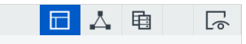
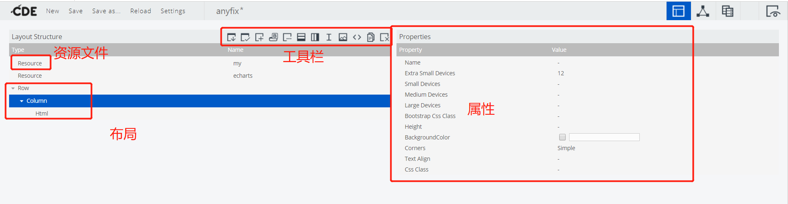
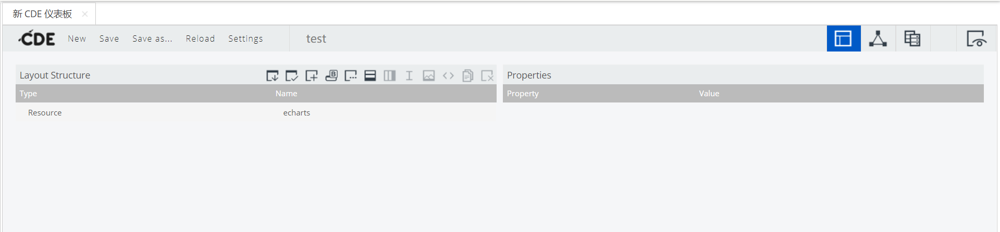

# 操作系统
# 软件依赖
^ Lastest ~ minimum
- Jdk1.8~
- pentaho-8.3
# 实验环境
- Windows10
- Jdk-1.8
- postgres-12
- pentaho-8.3
# PBA
PBA 全称 Pentaho Business Ananalyze，是 Hitachi 旗下一款基于 Java 的轻量级 BI 平台。PBA 具有开发图表，展示图表，提供 API 服务，展示报表，管理图表报表文件功能
PBA 占用内存比较大，请确保机器有 8G 内存，否则需要修改 Tomcat 的虚拟内存
# 安装 PBA
- 到官网或者 sourceforge 下载源码
- 下载完后解压，双击 start-pentaho.bat
- 出现这个提示，点击确定
- 第一次启动比较久，下图为启动成功（如果页面卡了，在这命令行里按回车）
# CDE
CDE 是 pentaho 内置的插件，用来制作 Dashboard 和 chart
CDE 分为三个层次，分别是数据层，组件层，视图层
下图四个按钮为视图层，组件层，数据层，预览

# 数据层
数据层为组件提供数据来源，数据层分为三个区域：
- 左边为创建数据源区域，选择数据源的类型，点击一下即可创建
- 中间为创建好的数据源
- 右边为每个数据源的配置项
# 组件层
组件层有两个功能，一是渲染数据层传过来的数据，二是控制变量参数传给数据层，是一个承上启下的作用
组件大概可分为四类：
- 参数组件：用来装变量的容器，筛选组件的值会自动放入参数组件
- 筛选组件：常用的筛选组件有下拉组件，单选组件，多选组件，文本输入组件，指定参数后，筛选组件的值变化后将自动放入参数组件，可以监听参数变化刷新组件。
- 图表组件：指定数据源后，展示对应的图表。常用图表有柱状图，折现图，饼图，散点图等，可以监听参数变化刷新组件。
- 其他功能组件：完成一些特别功能的组件。


# 视图层
视图文件使用了 boostrap3 的栅栏的布局，一行有 12 格，适配各种屏幕大小
工具栏依次是：
- 保存 CDE 布局
- 选择 CDE 布局
- 添加 js 或者 css 资源
- 添加 boostrap 面板
- 添加表单
- 添加行
- 添加列
- 添加空行
- 添加图片
- 添加 HTML
- 复制元素
- 删除元素
布局结构分为资源文件和布局
- 资源文件：有 js 文件和 css 文件，可以引用上传到 pentaho 的文件
- 布局：分为行，列，空行，图片，html 代码

# 基础使用
浏览器打开 http://localhost:8080 ， 点击以评估者身份登录，点击管理员下面的登录按钮
新建 cde
创建新的 CDE，并保存
创建数据层，这里选择使用 jdbc，也可以配置成 jndi
输入数据源名，驱动名，用户名，密码，jdbc Url，查询语句
QuerySELECT * FROM public.dim_date
属性 描述 例子中的值 Name 数据源名字，后面组件层会用到 localhost Driver 驱动类名 org.postgresql.Driver Password 数据库密码 Username 数据库用户名 Access Level 数据源权限等级 Public URL SQL Url jdbc:postgresql://localhost:5432/postgres Query 查询语句 SELECT * FROM public.dim_date Parameters 查询参数，内容为参数名，参数值 [] Calculated Columns 对某些列做一些计算 [] Columns [] Output Columns [] Output Model include Cache Keys 缓存的列 [] Cache Duration 缓存时间 3600 Cache 是否开启缓存 True 创建组件层，这里选择用 table 来演示
属性 描述 例子中的值 Name 组件名，没什么用 table Listeners 需要监听的参数 [] Column Headers table 组件特有，表头 [] Column Types table 组件特有，列的类型 [] Parameters 参数，参数将会传入数据 [] Datasource 选择数据源，对应数据源的 Name localhost HtmlObject 用于挂载的 html dom 节点，例如值为 app，则将会渲染到 id 为 app 的 html 元素上，一般使用 div 作为容器 table Click Action 点击事件 创建视图层，先添加一个行，再添加一个列，最后添加一个 html 元素
id=table 对应组件的 HtmlObject运行 CDE

# 配置参数
以上面的 table 为例，创建一个 id 下拉列表来动态刷新 table
- 步骤
- 创建查询 id 的数据源，用于筛选组件显示数值
- 创建参数组件
- 创建筛选组件，配置好数据源与参数容器，当筛选组件值变化时会自动将值放入该容器
- 图表组件监听参数，当参数值变化时图表将会自动刷新
- 图表组件的数据源 SQL 语句加入变量，变量使用方法：$
- 创建筛选组件的 html 元素，这样筛选组件才会显示出来
- 创建查询 id 的数据层，还是选择 jdbc，只是简单的查询所有 id 出来
SELECT dim_date_id FROM public.dim_date
| | 属性 | 描述 | 例子中的值 |
|---|---|---|
| Name | 数据源名字，后面组件层会用到 | localhost |
| Driver | 驱动类名 | org.postgresql.Driver |
| Password | 数据库密码 | |
| Username | 数据库用户名 | |
| Access Level | 数据源权限等级 | Public |
| URL | SQL Url | jdbc:postgresql://localhost:5432/postgres |
| Query | 查询语句 | SELECT dim_date_id FROM public.dim_date |
| Parameters | 查询参数，内容为参数名，参数值 | [] |
| Calculated Columns | 对某些列做一些计算 | [] |
| Columns | [] | |
| Output Columns | [] | |
| Output Model | include | |
| Cache Keys | 缓存的列 | [] |
| Cache Duration | 缓存时间 | 3600 |
| Cache | 是否开启缓存 | True |
创建变量参数，用来装载变量
属性 描述 例子中值 Name 参数名，查询组件会用到 p_id Property value 默认值 - Bookmarkable False Public 是否公开 False 创建查询组件，这里我选择了下拉列表
属性 描述 例子中的值 Name 组件名，没啥用 selectId Parameter 绑定的参数，对应参数的 Name p_id Listeners 监听的参数 可以监听多个，当参数变化后会自动传入数据源中，这里其实可以去掉，因为 query_id 数据源没有用到参数 ['p_id'] Parameters 参数，提供给 Datasource 使用 [] jQuery Plugin 添加 jq 拓展 - Value as id 是否作为 ID False Datasource 查询的数据源，这里是 query_id query_id Values array 常量值 [] HtmlObject 挂载的 Html dom 对象，例如值为 app，则将会渲染到 id 为 app 的 html 元素上，一般使用 div 作为容器 selectId 修改数据展示组件 (table)

属性 描述 例子中的值 Name 组件名，没什么用 table Listeners 需要监听的参数 ["p_id"] Column Headers table 组件特有，表头 [] Column Types table 组件特有，列的类型 [] Parameters 参数，参数将会传入数据 [["p_id","p_id"]] Datasource 选择数据源，对应数据源的 Name localhost HtmlObject 用于挂载的 html dom 节点，例如值为 app，则将会渲染到 id 为 app 的 html 元素上，一般使用 div 作为容器 table Click Action 点击事件 修改数据源
原 sqlSELECT * FROM public.dim_date
修改为 ${p_id} 为设置变量名
SELECT * FROM public.dim_date where dim_date_id = ${p_id}
添加使用到的参数
属性 描述 例子中的值 Name 数据源名字，后面组件层会用到 localhost Driver 驱动类名 org.postgresql.Driver Password 数据库密码 Username 数据库用户名 Access Level 数据源权限等级 Public URL SQL Url jdbc:postgresql://localhost:5432/postgres Query 查询语句 SELECT * FROM public.dim_date where dim_date_id = $ Parameters 查询参数，内容为参数名，参数值 [["p_id","p_id"]] Calculated Columns 对某些列做一些计算 [] Columns [] Output Columns [] Output Model include Cache Keys 缓存的列 [] Cache Duration 缓存时间 3600 Cache 是否开启缓存 True 添加查询组件的视图
在原来的 table 上添加筛选组件的 html 挂载点
原来：/<div id="table"></div>
改为：
/<div id="selectId"></div>
/<div id="table"></div>
运行

# 集成 Echarts
ECharts，缩写来自 Enterprise Charts，商业级数据图表，一个纯 Javascript 的图表库，可以流畅的运行在 PC 和移动设备上，兼容当前绝大部分浏览器（IE6/7/8/9/10/11，chrome，firefox，Safari 等），底层依赖轻量级的 Canvas 类库 ZRender，提供直观，生动，可交互，可高度个性化定制的数据可视化图表。创新的拖拽重计算、数据视图、值域漫游等特性大大增强了用户体验，赋予了用户对数据进行挖掘、整合的能力。
# 基础使用
- 获取 Echarts，点击超链接打开网页，选择你要使用到的组件，点下载后会获得一个 echarts.min.js 文件。首页下载的会是一个 zip 包，这里下载的是打包好的一个 js 文件
- 上传 echarts 到 pentaho
选择一个文件夹点上传，选择文件后上传即可
上传完后记得勾选显示隐藏文件，pentaho 默认不显示普通资源文件 - 新建 CDE
创建新的 CDE，并保存
- 引入 echarts
点击工具栏的添加资源，选 js 和引用已存在文件 - 输入名字 echarts (不然会找不到 js 文件)，选择已经上传好的 echarts 文件
- 再新建一个 js 文件，用来写生成 echarts 的 js 代码
这里选择自己写代码
- copy 一份官网的例子写在 js 里
var myChart = echarts.init(document.getElementById('main'));
// 指定图表的配置项和数据var option = {
title: {
text: 'ECharts 入门示例'
},
tooltip: {},
legend: {
data:['销量']
},
xAxis: {
data: ["衬衫","羊毛衫","雪纺衫","裤子","高跟鞋","袜子"]
},
yAxis: {},
series: [{
name: '销量',
type: 'bar',
data: [5, 20, 36, 10, 10, 20]
}]
};
// 使用刚指定的配置项和数据显示图表。myChart.setOption(option);
- 新建 html 代码
html 内容<div id="main" style="width: 600px;height:400px;"></div>
- 运行

# 动态图表
在 cde 里使用原生 echarts 会有一个问题，就是无法获取参数，无法获取数据源与无法监听参数，本章将解决这三个问题
- 步骤
- 创建参数，用于 echarts 数据源
- 创建下拉筛选组件，用于动态选择参数
- 创建 echarts 数据源，并获取 api
- jq 获取参数，js 配置 echarts，并通过 ajax 获取数据
- 创建 echarts 视图
新建一个 cde，并引入 echarts
创建参数容器

属性 例子中值 Name id Property value Bookmarkable False Public False 创建下拉筛选组件
属性 例子中的值 Name selectId Paramete id Listeners [] Parameters [] jQuery Plugin - Value as id False Datasource query_id Values array [["id","1"],["id","2"],["id","3"],["id","4"]] HtmlObject id 创建下拉组件视图

<div id="id"></div>
运行结果
创建 echarts 数据源
将传进来的参数作为输出结果传出去select ${id}属性 例子中的值 Name localhost Driver org.postgresql.Driver Password Username Access Level Public URL jdbc:postgresql://localhost:5432/postgres Query select $ Parameters [["id","id","Integer","",""]] Calculated Column [] Columns [] Output Columns [] Output Model include Cache Keys [] Cache Duration 3600 Cache True 保存 cde
当在 cde 里面创建一个数据源时，pentaho 会在该文件目录下创建一个同名 cda 文件，打开该文件
CDA 是 pentaho 的 api 插件，以后将新开一文章来讲解 CDA 的使用方法测试数据源
选择刚才创建好的 echarts 数据源，输入参数，点击运行
可以看剧数据源将参数作为输出
点击 Query Url，复制 api回到 cde，创建一个模板组件

性 描述 例子中的值 Name 组件名，没什么用 echarts Listeners 需要监听的参数 ["id"] Parameters 参数，参数将会传入数据源 [["id","id"]] Datasource 选择数据源，对应数据源的 Name localhost HtmlObject 用于挂载的 html dom 节点，例如值为 app，则将会渲染到 id 为 app 的 html 元素上，一般使用 div 作为容器 echarts Model Handler 处理数据的函数 Template 模板函数，执行 js 写在下面 Template Library 模板库 Events 点击事件等事件 Formatters 格式化数据 Model root element 数据源的根节点 function(){
// 获取参数var id = $('#id select option:selected').val()?$('#id select option:selected').val():0
var d = []
var result=0
$.ajax({
type : 'GET',
url : "http://localhost:8080/pentaho/plugin/cda/api/doQuery?path=/public/test.cda&dataAccessId=localhost¶mid="+id,
async : false,
dataType : 'json',
data : null,
success : function(response){
d.push(response.resultset[0][0])
}})
var myChart = echarts.init(document.getElementById('main'));
// 指定图表的配置项和数据var option = {
title: {
text: 'ECharts 入门示例'
},
tooltip: {},
legend: {
data:['销量']
},
xAxis: {
data: ["衬衫"]
},
yAxis: {},
series: [{
name: '销量',
type: 'bar',
data: d}]
};
// 使用刚指定的配置项和数据显示图表。myChart.setOption(option);
// 返回return ""
}挂载模板组件
在筛选组件的上面加一个 column，name 写 echarts 对应模板组件的 HtmlObject创建 echarts 的挂载点
修改原来 html，在筛选组件下加上 echarts div<div id="id"></div>
改为
<div id="id"></div>
<div id="main" style="width:400px;height:400px"></div>
运行
模板组件的数据源必须要返回值否则会报错，初始参数的值为 null，所以初始运行会报错
当我们改变下拉组件的值，参数不再为 null，模板组件刷新，echart 通过 ajax 动态渲染视图


# 相关链接
CDE 官方配置文档：http://webdetails.github.io/ccc/#type=line&anchor=time-series-line